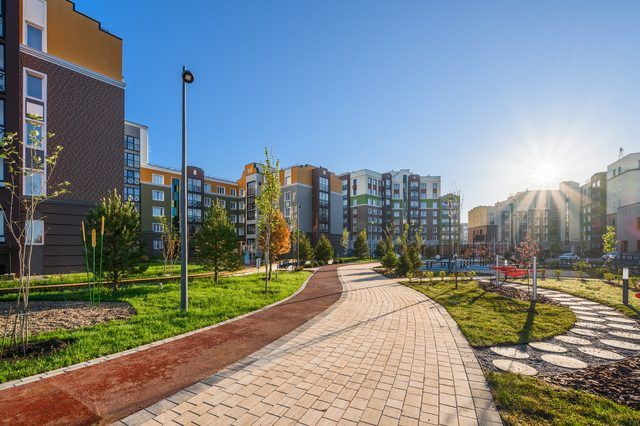

Ж
Железно | Киров
Город будущего
Кварталы города будущего ZNAK. Один из самых масштабных проектов включает 7 разных кварталов, каждый носит уникальное название… концепция 15-минутного города.
20231,66 тыс. · пост № 1 года
Как написали бы сейчас: Семь кварталов, у каждого своё имя. Школа, сад, парк и магазины — в 15 минутах пешком. Не в планах, а уже сегодня.
Масштаб и концепция — самый сильный пост года
Провожаем лето ярко в городе будущего. Встречаем осень весело, с музыкой, призами и сюрпризами. А заодно отмечаем старт продаж нового дома №29!
26 августа 2025около 1 тыс.
Как написали бы сейчас: Провожаем лето на площади: музыка, призы, мороженое. И открываем продажи в доме №29 — 26 августа.
Старт продаж упакован в праздник

Ж
Железно | Киров
Доказательство
Лучший досуг в городе будущего. Строительство стильной площадки — ещё одно место притяжения для жителей квартала.
20231,49 тыс.
Как написали бы сейчас: Новая площадка во дворе уже работает: канатная сеть, батут, зона для подростков. Ещё одно «открыли» вместо «будет».
Инфраструктура как новость